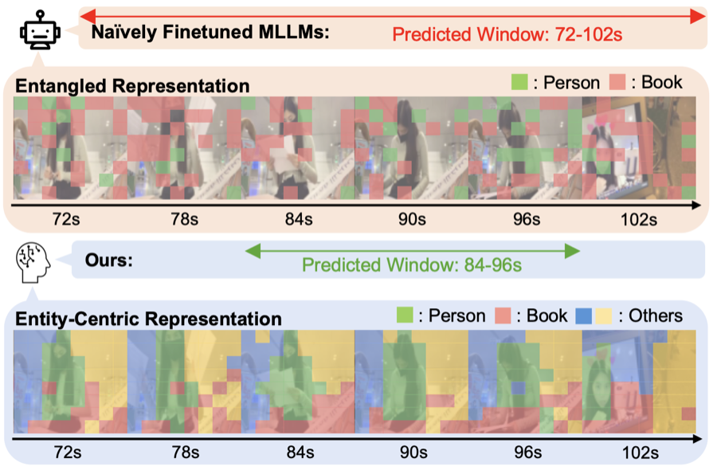
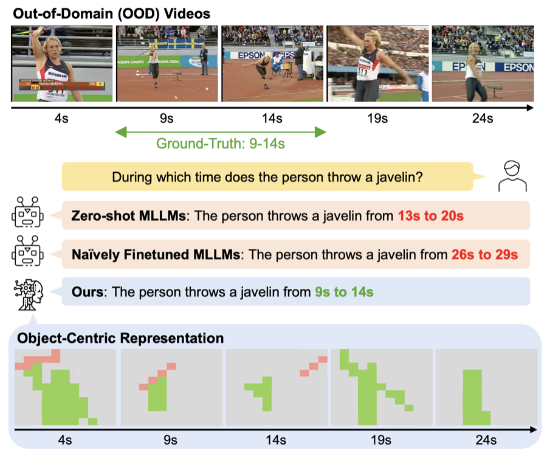

NeurIPS 2026
EVIDENT: Routing MLLM Adaptation through Entity-Grounded Visual Evidence for Cross-Domain Video Temporal Grounding
Neural Information Processing Systems (NeurIPS), 2026
M.S. Student · Kyung Hee University
I am an M.S. student in Computer Science & Engineering at Kyung Hee University, advised by Prof. Jinwoo Choi at VLLab. I also work closely with Prof. Joonseok Lee at Seoul National University.
My research interests lie in video understanding, object-centric learning, and self-improving models. I am motivated by how humans acquire general world knowledge: by reasoning over persistent entities rather than spurious correlations, and by continually learning from self-generated experience. Specifically, I am interested in two questions: what structured representations allow video models to reason compositionally and transfer across domains, and how models can keep acquiring knowledge from video without relying on human annotation. I am also broadly interested in world models that learn through prediction in latent space.

NeurIPS 2026
Neural Information Processing Systems (NeurIPS), 2026

CVPR Workshop 2026
CVPR 2026 Workshop on GRAIL-V
M.S. in Computer Science & Engineering
Kyung Hee University · Advisor: Prof. Jinwoo Choi
B.S. in Industrial & Management Systems Eng. / Computer Science & Eng.
Kyung Hee University · Double major
Graduate Researcher
VLLab, Kyung Hee University
Open-Source Contributor Special Award
OSSCA · Hugging Face 🤗
Machine Learning Bootcamp
Google for Developers